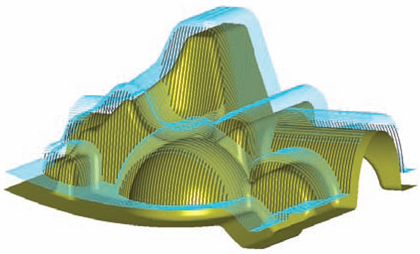

|
PTC yüksek hýzda iþleme'nin (high speed) gücünü, kalýp iþlemelerinizde ve yüksek hassasiyet gerektiren diðer CAM iþlerinde, hýzlý ve kullanýmý kolay NC takým yolu uygulamasý olan Pro/TOOLMAKER ile kullanýcýlara sunuyor. Artýk imalat mühendisleri ve operatörler post-processing ve takým kütüphanelerini tek bir ürün içerisinde toplayan çok daha güçlü NC programlama kapasitesine sahip bir ürüne sahip olabilir. CNC frezeleriniz için Pro/ENGINEER'da oluþturulmuþ ya da herhangi bir CAD yazýlýmýndan gelen modellere bundan böyle çok kolay bir þekilde takým yolu programlarý oluþturabilirsiniz.

Günümüz kalýp tasarýmcýlarý farklý tip imalatlar yapan müþterilerinin isteklerini karþýlayabilmek ve global pazarda yarýþabilmek için sýnýfýnýn en iyisi olan çözümlere ihtiyaç duymaktadýrlar. Pro/TOOLMAKER iþlevsel verimliliði geliþtirerek ve yüksek hýzda (high speed) yüksek hassasiyette iþleme teknolojisi ile sunulmuþ en son yetenekleri zorlayarak pazarda yerinizi daha hýzlý almanýza yardýmcý olur.
Pro/TOOLMAKER ile herhangi bir CAD modeli üzerinde imalat mühendisleri rahat çalýþabilirler, CAD modelleri ile direkt olarak iliþkili NC takým yollarýný oluþturabilirler. Sonuç olarak; herhangi bir tasarým için ürün kalitesini arttýracak, hatalý üretimi azaltacak, üretim süresini ve maliyetleri düþürecek bir güce sahip olursunuz.
Hangi Sektörler Kullanmalýdýr?
- Havacýlýk & Savunma
- Otomotiv
- Elektronik ve Yüksek Teknoloji
- Endüstriyel Ekipmanlar
- Týbbi Cihazlar
Saðladýðý Faydalar:
- Kullanýmý ve öðrenimi kolaydýr.
- Takým yollarýný kompleks modeller için güvenilir, hýzlý ve çok iyi yüzey kalitesine sahip bir þekilde hazýrlayabilirsiniz.
- Farklý CAD formatlarýný destekler ve tamamen birliktelik içerisinde çalýþmasýný saðlar, Pro/ENGINEER ve diðer CAD sistemleri için güvenilir bir takým yolu hesaplama programýdýr.
- Tüm yüksek hýzda (high speed) hassas iþleme prosesleri tek bir pakette;
- Roughing, restroughing, finishing, rest milling ve pencil trace iþlemini de içeren yüksek hýzda (high speed) iþleme yöntemleri için iþleme stratejileri, optimize edilmiþ yaklaþma, çýkýþ ve baðlantýlar
- En yakýn rakibinden %40 daha hýzlý takým yolu hesaplama zamaný
- Takým ve tutucu geometrilerinin tamamý için dalma kontrolü
- Malzeme, ilerleme, hýz, kesme koþullarýný içeren takým kütüphanesi
- Otomatik delik operasyonlarý için dýþarýdan import edilmiþ geometriler için delik saptama
- 5 eksen iþleme (3 + 2) desteði
- Herhangi bir CNC tezgâh için post prosesör oluþturmak ve düzenlemek için GPOST içerir
- Takým yollarý arka planda hesaplanýrken Pro/TOOLMAKER ile çalýþmaya devam etmenizi saðlayan multi-thread özelliði ile zaman kaybýný engeller.
- Takým yolu ve ilerleme hýzý optimizasyonlarý ve titreþim engelleme özelliði ile takýmlarýn ömrünü uzatýr ve tezgâhýnýzýn zorlanmasýný azaltýr.
- Her bir iþleme adýmýndan sonra parçanýn iþlem sonrasýndaki þeklinin görülmesi ve sonradan oluþturulacak olan takým yollarýnýn optimizasyonunun saðlamasý için stok modelleri oluþturur.
Ürün Yetenekleri ve Özellikleri:
- Ýleri düzey iþleme yetenekleri
- 3+2 eksen iþleme ( 5 eksen pozisyonlama )
- Daha verimli ve yumuþak geçiþlerle oluþturulmuþ 3D otomatik roughing ve rest-roughing iþlemleri
- Diþi, Erkek hamiller için özel iþleme teknikleri ve maksimum talaþ kaldýrma
- Spiral ve radial takým yolu seçenekleriyle eþit yanal ilerlemeler
- Parça üzerindeki düz bölgelerin kolayca belirlenmesi ve iþlenmesi
- Parça sýnýrlarý ve formuna uygun yüzey finish iþlemleri
- Eðimli ve düz yüzeyleri açý kontrolü ile hesaplayarak eþit pasolarla (Z-lever) tarama
- Dip köþe finishlerinde tek ve çoklu paso seçenekleri
- Takým, shaft ve tutucu geometrisini dikkate alarak tam çarpma kontrolü
- Parça üzerindeki delikleri otomatik tanýma
- Ýþleme parçanýzý dikkate alarak otomatik kütük oluþturma
- Ýþlenmemiþ bölgelerin tespiti
- Macro kullanarak hýzlý takým yollarý oluþturma
- Parça geometrilerinin analizi
- Nokta bulutu datalarýnýzý kullanarak direk takým yolu oluþturulmasý
- Takým yolu optimizasyonu
- Kesme hýzý optimizasyonu
- Takým ömrünü uzatmak için titreþimi azaltan seçenek
- Boþta hareketleri azaltan geçiþ baðlantýlarýný hesaplama
- Ortak çalýþtýðý program uzantýlarý
- IGES, VDA-fs, STL, RAW, ve Parasolid
- CATIA v4 ve CATIA v5, SolidWorks (opsiyonlu)
- Pro/ENGINEER ile parametrik çalýþma
- Post Processor
- Çeþitli Kontrol ünitelerini destekleyen GPOST post processorün saðladýðý geniþ kütüphane
- Standart APT çýktýsý ile farklý post processor sistemlerine uyumluluk.
Parametric Technology Corporation (PTC) hakkýnda:
PTC (Nasdaq:PMTC) dünya çapýnda 50,000'den fazla müþterisi ile ürün yaþam süreci yönetimi (PLM), içerik yönetimi ve dinamik yayýn çözümleri ile konusunda lider firmadýr. PTC müþterileri yenilikçi ve ileriyi gören firmalar olup savunma, uçak, uzay, otomotiv, tüketici elektroniði, yüksek teknoloji, sanayi ekipmanlarý, servis, kamu ve diðer tüm endüstri alanlarýnda çalýþan þirketlerdir. PTC, ürün geliþtirme sürecinde kavramsal tasarýmdan nihai ürüne kadar tüm aþamalarda modüler ve entegre çözümlerin yaný sýra, kurum için ve dýþýnda tedarikçiler ve iþ ortaklarý ile arasýnda saðladýðý online koordinasyon nedeni ile geliþtirme sürecinde maksimum verimlilik saðlar. Daha fazla bilgi için lütfen www.ptc.com'u ziyaret ediniz. (PTC is included in the S&P Midcap 400 and Russell 2000 indices.)
NFOMA GROUP | Ýnformatik A.Þ. hakkýnda:
1988 yýlýnda kurulan ve bir INFOMA GROUP þirketi olan Ýnformatik, "Üreten Türkiye için Teknoloji Temini" sloganý ile sanayide "özgün tasarým ve özgün imalatýn" gerçekleþebilmesi, Türk Sanayisinin rekabetçi bir yapýya kavuþmasý amacý ile, üreticilere Ar-Ge altyapýlarýnda kullanabilecekleri ve verimliliklerini arttýran ileri teknoloji çözümleri sunmaktadýr. Bunlar, kýsa kýsa adý CAD/CAM/CAE (PLM-Product Lifecycle Managment/Ürün Geliþtirme Yönetimi) olan ve imalata yönelik teknolojilerin yaný sýra kýsa adý AEC/GIS olan inþaat ve harita konularýna yönelik sayýsal harita üretimi, konstrüksiyon ve uzaktan algýlama konularýdýr. Bu konularda, Informatik yaklaþýk 19 yýldýr PTC, BOEING, PCI gibi dünyanýn tanýnmýþ ve kendini kanýtlamýþ lider firmalarýný baþarý ile temsil etmektedir. Ýnformatik, bu sektörün Türkiye'de kurulmasý ve yapýlanmasýnda ilk olmanýn bilinci ile öncü rol oynamýþ ve hala kendi sektörünün lideri ve PTC Pro/ENGINEER Türkiye Temsilcisi olarak, sanayinin ilk 500 firmasý ve KOBÝ'lere hizmet sunmaktadýr www.infoma.biz
Ýrtibat:
Tarkan Yüksek
MCAD Teknik Grup Lideri
INFOMA GROUP
Informatik - InFomaDesign - SmartMeter - Arsay
Famas Plaza A-Blok Kat:3 Darülaceze Cad.
H.Z. Türkkan Sok.
Þiþli Ýstanbul
Tel: (212) 222 3235
www.infoma.biz
|